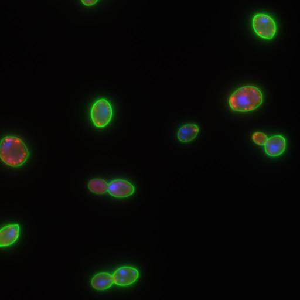
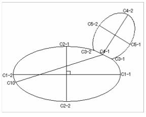
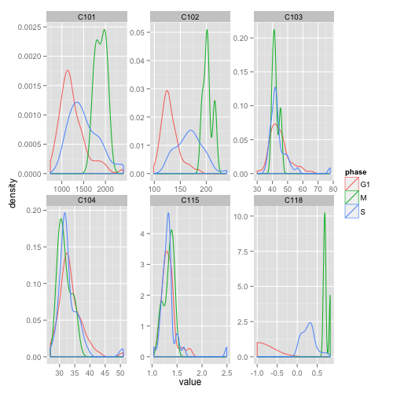
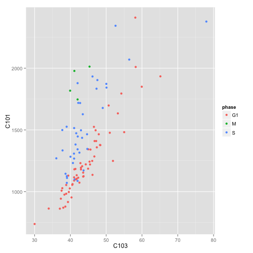
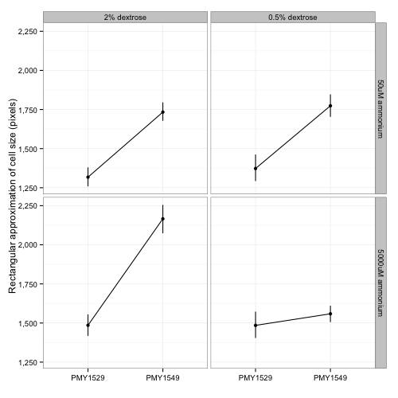
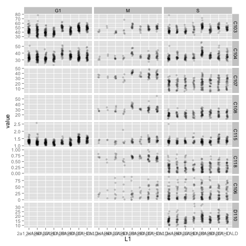
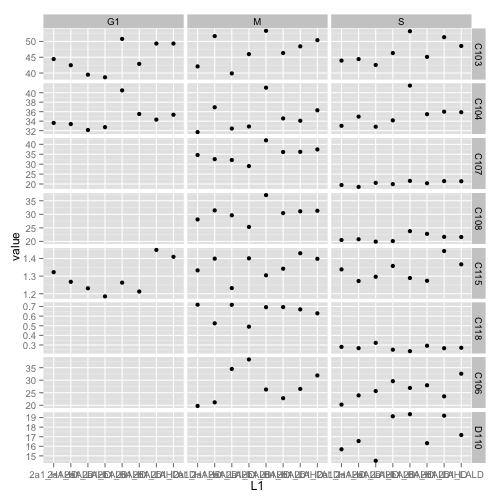

reshape
Table of Contents
- 1 Medium scale data processing
- 2 What is a list?
- 3 Making a list by hand
- 4 lapply
- 5 sapply
- 6 Assembling paths to our data with lapply
- 7 rapply
- 8 Reading in data
- 9 Filtering out bad data
- 10 Melting data
- 11 Casting data
- 12 plyr the split, apply, combine paradigm
- 13 How to deal with obnoxious data
- 14 Appendix
1 Medium scale data processing
Quite a lot of what working biologists do (or could do) with computers is 'medium scale computing.' I don't know if there's a technical definition of this, but to me it means that you have too much data for dealing with in excel, but too little to justify setting up a database for sophisticated queries. Biological data often comes in batches (different experimental days) and with lots of covariates (geontype, environment, person who collected the data). For me the challenge was learning to quickly get all that data along with it's covariates into R in a way that was flexible and reusable. That is, my experiments change all the time, so things can't be too hard-coded, but things also stay the same and I don't want to have to copy and paste too much.
2 What is a list?
When I first started using R, I never bothered much with lists. If I had three different datasets, they would all be stored as three different data frames. The problem with this is that you need to remember what data.frames go together, what their names are, and what their relationship to each other is. This is where lists come in. Rather than storing everything as a separate variable, a list has slots to put conceptually related objects together.
3 Making a list by hand run
As an example, we'll use some data I collected about yeast morphological phenotypes. Microscope images were collected of yeast cells stained with markers for the nuclei, cell wall, and actin:

Software then segmented the yeast cells and collected a bunch of measurements relating to the size, shape and relationship between nuclei, actin patches, and cells. For example, here's a diagram of the measurements collected based on cell wall images:

I grew two different wild yeast isolates (referred to by their position in a 96 well plate as 2a1 and 2b1) in four different synthetic medias that either had high or low dextrose (2% or 0.5%) and high or low ammonium sulfate (5000uM or 50uM). These are called HAHD for "High ammonium high dextrose", "LAHD low ammonium high dextrose", etc. The results of running the morphology software on a batch of images from each of these combinations is in a series of directories that I've placed online.
The directory structure is as follows:
-
http://people.duke.edu/~csm29/morphology_data
- definitions_without_stage.csv
- a mapping between morphological trait ID and a description of what it is
- 8 folders (2a1_HAHD, 2a1_HALD, etc.)
-
two strains, four media conditions
- 2a1_HAHD_actin_biological.xls
- morphological measurements for actin cytoskeleton
- 2a1_HAHD_dapi_biological.xls
- morphological measurements for nuclear position
- 2a1_HAHD_conA_biological.xls
- morphological measurements for cell wall characteristics
We'll hand-code a list together that will mimic the directory structure of our experiment and then use various list operations to quickly and easily read in the data into a usable form.
baseFile = "http://people.duke.edu/~csm29/morphology_data" dataTypes = list( actin = "_actin_biological.xls", dapi = "_dapi_biological.xls", conA = "_conA_biological.xls" ) samples <- list("2a1_HAHD" = "2a1_HAHD", "2a1_HALD" = "2a1_HALD", "2a1_LALD" = "2a1_LALD", "2a1_LAHD" = "2a1_LAHD", "2b1_HAHD" = "2b1_HAHD", "2b1_HALD" = "2b1_HALD", "2b1_LALD" = "2b1_LALD", "2b1_LAHD" = "2b1_LAHD" ) #These are mappings between the IDs used to describe a variable and a more 'human friendly description defs <- read.csv("http://people.duke.edu/~csm29/morphology_data/definitions_without_stage.csv", as.is=T) rownames(defs) <- defs$ID
4 lapply
The simplest function to work with lists is lapply. The thing to remember about 'apply' functions is that they call a function that you determine with each successive list item as the first argument of the function. The clutch thing about 'apply' functions is that they remember the names of the list items:
This function just returns the exact same variable, which means our list doesn't change)
noChange = function(x){
x
}
lapply( samples[1:4], noChange)
$`2a1_HAHD` [1] "2a1_HAHD" $`2a1_HALD` [1] "2a1_HALD" $`2a1_LALD` [1] "2a1_LALD" $`2a1_LAHD` [1] "2a1_LAHD"
Rather than having to name a function at each place, it's convenient to just define a function in the argument of the lapply function like this:
lapply( samples[1:4], function(x) x)
$`2a1_HAHD` [1] "2a1_HAHD" $`2a1_HALD` [1] "2a1_HALD" $`2a1_LALD` [1] "2a1_LALD" $`2a1_LALD` [1] "2a1_LALD"
Defining a function in lapply itself allows you to nest other functions into the lapply call. For example, in this line we replace all the Ls with Xs. (look up gsub documentation for details).
lapply( samples[1:4], function(x) gsub("L", "X", x))
$`2a1_HAHD` [1] "2a1_HAHD" $`2a1_HALD` [1] "2a1_HAXD" $`2a1_LALD` [1] "2a1_XAXD" $`2a1_LALD` [1] "2a1_XAXD"
The approach above is especially useful if you want to do extra processing for each item of the list. However, you don't need to use this approach if you just want to supply additional arguments to a function that don't change throughout the function call. For example, the strsplit function takes two arguments. The first is a vector of strings to split and the second is the character to split them by. We can specify this second argument by simply appending it after the function.
lapply( samples[1:2], strsplit, "_")
$`2a1_HAHD` $`2a1_HAHD`[[1]] [1] "2a1" "HAHD" $`2a1_HALD` $`2a1_HALD`[[1]] [1] "2a1" "HALD"
The output might look a bit different that what you'd expect. Rather than having a vector with a vector of length two, there's a list of length one with a vector of length two for each entry. A good way to visualize lists is using the str function. You can readily see that it's depth 2.
str(lapply( samples[1:2], strsplit, "_"))
List of 2 $ 2a1_HAHD:List of 1 ..$ : chr [1:2] "2a1" "HAHD" $ 2a1_HALD:List of 1 ..$ : chr [1:2] "2a1" "HALD"
This example makes a more complicated function that first splits each string by the underscore, then returns the first (and only) item in the list, leading to a list of depth 1, which is the behavior that we wanted.
lapply( samples[1:2], function(x){ out <- strsplit(x, "_") out[[1]] })
$`2a1_HAHD` [1] "2a1" "HAHD" $`2a1_HALD` [1] "2a1" "HALD"
5 sapply
Depending on the object of the operation, it may be more convenient to work with the data contained in a list as a data.frame. A function that facilitates this is 'sapply.' Unlike 'lapply' which always returns a list, sapply will attempt to make a data.frame out of the results of lapply. (see the appendix for the relationship between lists and data.frames).
Since our previous function always returned a result of length 2, sapply made data.frame with two observations for each of the columns.
sapply( samples[1:2], function(x){ out <- strsplit(x, "_") out[[1]] })
2a1_HAHD 2a1_HALD
[1,] "2a1" "2a1"
[2,] "HAHD" "HALD"
Often, it's convenient to be able to keep track of the 'kind' of observation that a data point belongs to. The nice thing about sapply is that by assigning names to the output of the function.
sapply( samples[1:2], function(x){ out <- strsplit(x, "_") out = out[[1]] names(out) = c("strain", "media") out })
2a1_HAHD 2a1_HALD
strain "2a1" "2a1"
media "HAHD" "HALD"
6 Assembling paths to our data with lapply
Each folder has three different data types. This function takes three arguments. The first argument is the folder name, the second is the 'base file', the third is a list of data types. The result of this is a list where each strain/media has a list that in turn contains a URL to each data table.
Note that the function takes three arguments. The first argument is 'x' which is the folder name from the list we're going to call it on. The second two arguments are the base folder and the list of data types that we defined above. Rather than hard-coding these into the function, it's better practice to write a function that allows you to change the value of either the base folder or the data value you want to read in. lapply allows you to pass such arguments by just appending them on after the function. This leads to the elegant, but somewhat difficult to read, function call below:
makeDataPaths <- function(x, bFile, dTypes){ #Paste together the base of each file dataFolder <- paste( bFile, x, x, sep = "/") #Paste this base onto each data type lapply(dTypes, function(d){ paste( dataFolder, d, sep = "") }) } dataPaths <- lapply( samples, makeDataPaths, baseFile, dataTypes) str(dataPaths[1:2])
List of 2 $ 2a1_HAHD:List of 3 ..$ actin: chr "http://people.duke.edu/~csm29/morphology_data/2a1_HAHD/2a1_HAHD_actin_biological.xls" ..$ dapi : chr "http://people.duke.edu/~csm29/morphology_data/2a1_HAHD/2a1_HAHD_dapi_biological.xls" ..$ conA : chr "http://people.duke.edu/~csm29/morphology_data/2a1_HAHD/2a1_HAHD_conA_biological.xls" $ 2a1_HALD:List of 3 ..$ actin: chr "http://people.duke.edu/~csm29/morphology_data/2a1_HALD/2a1_HALD_actin_biological.xls" ..$ dapi : chr "http://people.duke.edu/~csm29/morphology_data/2a1_HALD/2a1_HALD_dapi_biological.xls" ..$ conA : chr "http://people.duke.edu/~csm29/morphology_data/2a1_HALD/2a1_HALD_conA_biological.xls"
Since the result of the function is a list and the function was applied to each element of the list is now a list. An easy way to do 'apply' type operations on a nested list is to call the function lapply as the second argument to apply. lapply takes two arguments: the first is a list and the second is the function to apply. Using the syntax below, we apply lapply to each sub-list, and the function 'print' to each element of the sublist.
foo = lapply( dataPaths[1:2], lapply, print)
[1] "http://people.duke.edu/~csm29/morphology_data/2a1_HAHD/2a1_HAHD_actin_biological.xls" [1] "http://people.duke.edu/~csm29/morphology_data/2a1_HAHD/2a1_HAHD_dapi_biological.xls" [1] "http://people.duke.edu/~csm29/morphology_data/2a1_HAHD/2a1_HAHD_conA_biological.xls" [1] "http://people.duke.edu/~csm29/morphology_data/2a1_HALD/2a1_HALD_actin_biological.xls" [1] "http://people.duke.edu/~csm29/morphology_data/2a1_HALD/2a1_HALD_dapi_biological.xls" [1] "http://people.duke.edu/~csm29/morphology_data/2a1_HALD/2a1_HALD_conA_biological.xls"
7 rapply
If you have many levels of lists, or if the number of levels can change in the course of your coding, it can be inconvenient to use lapply to access the elements within the (sub-)(sub-)sub-lists. The solution is to use 'rapply.' rapply goes recursively (hence the name) to each (sub-)(sub-)(sub-, etc.)element and then applies the function. The results can then be returned either as an array or in the same form as the list was in.
If you specify 'unlist' you wil end up with a character vector:
str(
rapply( dataPaths[1:2], c, how="unlist")
)
Named chr [1:6] "http://people.duke.edu/~csm29/morphology_data/2a1_HAHD/2a1_HAHD_actin_biological.xls" ... - attr(*, "names")= chr [1:6] "2a1_HAHD.actin" "2a1_HAHD.dapi" "2a1_HAHD.conA" "2a1_HALD.actin" ...
Whereas if you specify 'list' you'll end up with a list with the same number of levels as before.
str(
rapply( dataPaths[1:2], c, how="list")
)
List of 2 $ 2a1_HAHD:List of 3 ..$ actin: chr "http://people.duke.edu/~csm29/morphology_data/2a1_HAHD/2a1_HAHD_actin_biological.xls" ..$ dapi : chr "http://people.duke.edu/~csm29/morphology_data/2a1_HAHD/2a1_HAHD_dapi_biological.xls" ..$ conA : chr "http://people.duke.edu/~csm29/morphology_data/2a1_HAHD/2a1_HAHD_conA_biological.xls" $ 2a1_HALD:List of 3 ..$ actin: chr "http://people.duke.edu/~csm29/morphology_data/2a1_HALD/2a1_HALD_actin_biological.xls" ..$ dapi : chr "http://people.duke.edu/~csm29/morphology_data/2a1_HALD/2a1_HALD_dapi_biological.xls" ..$ conA : chr "http://people.duke.edu/~csm29/morphology_data/2a1_HALD/2a1_HALD_conA_biological.xls"
8 Reading in data run
With all this in mind, it's easy to now read in our data. For clarity, I'm going to reproduce all the code that was needed to get to this point:
makeDataPaths <- function(x, bFile, dTypes){ #Paste together the base of each file dataFolder <- paste( bFile, x, x, sep = "/") #Paste this base onto each data type lapply(dTypes, function(d){ paste( dataFolder, d, sep = "") }) } baseFile = "http://people.duke.edu/~csm29/morphology_data" dataTypes = list( actin = "_actin_biological.xls", dapi = "_dapi_biological.xls", conA = "_conA_biological.xls" ) samples <- list("2a1_HAHD" = "2a1_HAHD", "2a1_HALD" = "2a1_HALD", "2a1_LALD" = "2a1_LALD", "2a1_LAHD" = "2a1_LAHD", "2b1_HAHD" = "2b1_HAHD", "2b1_HALD" = "2b1_HALD", "2b1_LALD" = "2b1_LALD", "2b1_LAHD" = "2b1_LAHD" ) dataPaths <- lapply( samples, makeDataPaths, baseFile, dataTypes) morphList <- rapply( dataPaths, read.table, header = T, sep="\t", how="list")
The result of this is a list of lists. Each strain/media combination has a list of length three. Each element is a data.frame which morphological measurements as the columns and cells as the rows. When we look at the dimensions of these measurements, we can see that each data type has the same number of cells. In fact, the observations are in the same order. We make use of this below.
lapply( morphList, sapply, function(x){ out <- dim(x) names(out) <- c("num.cells", "num.vars") out })[1:2]
$`2a1_HAHD`
actin dapi conA
num.cells 114 114 114
num.vars 13 103 25
$`2a1_HALD`
actin dapi conA
num.cells 109 109 109
num.vars 13 103 25
9 Filtering out bad data run
Since the observations (cells) are in the same order for each data type, we can simply our list by just gluing together the three elements in the list.
morphListFiltered <- lapply( morphList, function(x){ data.frame( x[[1]], x[[2]], x[[3]]) }) colnames(morphListFiltered[[1]])
[1] "image_number" "cell_id" "Cgroup" "Agroup" [5] "A101" "A102" "A103" "A104" [9] "A120" "A121" "A122" "A123" [13] "X" "image_number.1" "cell_id.1" "Cgroup.1" [17] "Dgroup" "D101" "D102" "D103" [21] "D104" "D105" "D106" "D107" [25] "D108" "D109" "D110" "D111" [29] "D112" "D113" "D114" "D115" [33] "D116" "D117" "D118" "D119" [37] "D120" "D121" "D122" "D123" [41] "D124" "D125" "D126" "D127" [45] "D128" "D129" "D130" "D131" [49] "D132" "D133" "D134" "D135" [53] "D136" "D137" "D138" "D139" [57] "D140" "D141" "D142" "D143" [61] "D144" "D145" "D146" "D147" [65] "D148" "D149" "D150" "D151" [69] "D152" "D153" "D154" "D155" [73] "D156" "D157" "D158" "D159" [77] "D160" "D161" "D162" "D163" [81] "D164" "D165" "D166" "D167" [85] "D168" "D169" "D170" "D171" [89] "D172" "D173" "D174" "D175" [93] "D176" "D177" "D178" "D179" [97] "D180" "D181" "D182" "D183" [101] "D184" "D185" "D186" "D187" [105] "D188" "D189" "D190" "D191" [109] "D192" "D193" "D194" "D195" [113] "D196" "D197" "D198" "X.1" [117] "image_number.2" "cell_id.2" "Cgroup.2" "C101" [121] "C102" "C103" "C104" "C105" [125] "C106" "C107" "C108" "C109" [129] "C110" "C111" "C112" "C113" [133] "C114" "C115" "C116" "C117" [137] "C118" "C126" "C127" "C128" [141] "X.2"
The resulting list contains a bunch of columns, including some duplicates. Furthermore, not all the data is reliable. We'll exclude all the crap by wrapping the instructions into one function. We can then filter all the bad data in a single lapply call.
removeBadData <- function(x){ out <- subset(x, Cgroup != "complex") out <- subset(out, Dgroup != "-") out <- subset(out, Agroup != "-") unneededColumns <- grep("\\.1|\\.2|X", colnames(out)) out[,-unneededColumns] } morphListFiltered <- lapply( morphListFiltered, removeBadData)
10 Melting data
The first reshape command we'll look at is 'melt.' The melt function will take either a list, a data.frame, or a matrix. In the case of a data.frame, the function will convert from the 'wide' form of data to the 'long' form of the data. An example will make this easier to understand.
We'll look at just a small subset of the morphological features for a single strain/media combination
library(reshape) #Restrict the data to a few of the morphological features and some identifying data examp <- subset(morphListFiltered[[1]], select = c(image_number, cell_id, Dgroup, C101, C102, C103, C104, C115, C118) ) #This adds information about the cell-cycle phase examp$phase <- NA examp$phase[ examp$Dgroup == "A" ] <- "G1" examp$phase[ examp$Dgroup == "A1" ] <- "S" examp$phase[ examp$Dgroup == "C" ] <- "M" #The restricts the data to only those cells with an identifiable cell cycle phase. examp <- subset( examp, !is.na(phase) ) examp <- subset(examp, select = -Dgroup) head(examp)
image_number cell_id C101 C102 C103 C104 C115 C118 1 1 0 1341 135.0538 45.60702 35.60899 1.280773 -1.0000000 2 1 1 2010 167.1960 58.24088 42.72002 1.363316 -1.0000000 3 1 2 1359 136.7107 47.38143 35.35534 1.340149 -1.0000000 4 1 3 879 109.4975 38.58756 28.30194 1.363424 -1.0000000 5 1 4 1526 173.1960 38.94868 32.55764 1.196299 0.4355597 6 1 5 1933 204.4092 46.17359 30.14963 1.531481 0.6779514 phase 1 G1 2 G1 3 G1 4 G1 5 S 6 S
In the 'wide' form of data, samples have a vector of information associated with them with each type of data as a column.
To get to the long form of data, we'll call the melt function. In the 'long' form of the data, data types are no longer directly associated in rows of the data. Rather, each row corresponds to a particular 'data observation' that can keep certain 'indexes' in order to figure out what individual or observation they correspond to. We tell melt which variables we want to keep as indices (in this case the 'image_number', the 'cell_id', and the 'phase'), and the rest are divided among two columns: a 'variable' column that tells you the type of data and a 'value' column that tells you the measurement of the data.
examp.m <- melt(examp, id.vars = c("image_number", "cell_id", "phase")) head(examp.m)
image_number cell_id phase variable value 1 1 0 G1 C101 1341 2 1 1 G1 C101 2010 3 1 2 G1 C101 1359 4 1 3 G1 C101 879 5 1 4 S C101 1526 6 1 5 S C101 1933
The variable column contains all the variables that were originally present as variables in the columns.
unique(examp.m$variable)
[1] C101 C102 C103 C104 C115 C118 Levels: C101 C102 C103 C104 C115 C118
For your information, this is what the measurements correspond to.
defs[as.character(unique(examp.m$variable)), c("ID","concise_description")]
ID concise_description
C101 C101 Whole cell size
C102 C102 Whole cell outline length
C103 C103 Long axis length in mother cell
C104 C104 Short axis length in mother cell
C115 C115 Mother axis ratio
C118 C118 Cell size ratio
In some sense, all the morphological measurements are equivalent to each other. They're all numbers. You could actually tell reshape to only index by the image number and the cell number and not by the phase of the cell cycle
examp.m2 <- melt(examp, id.vars = c("image_number", "cell_id")) head(examp.m2)
image_number cell_id variable value 1 1 0 C101 1341 2 1 1 C101 2010 3 1 2 C101 1359 4 1 3 C101 879 5 1 4 C101 1526 6 1 5 C101 1933
Cell cycle now appears in the variable column.
unique(examp.m2$variable)
[1] C101 C102 C103 C104 C115 C118 phase Levels: C101 C102 C103 C104 C115 C118 phase
However, this has the unexpected result of converting the value column to characters. Philosophically, this kind of makes sense. The cell cycle position is something a little different from the other measurements, and it's inappropriate to class it with the others.
head(examp.m2$value)
[1] "1341" "2010" "1359" "879" "1526" "1933"
Depending on the way you want to plot or analyze your data, it makes sense to have your data in either the long or the short form. For instance, if you wanted to look at all the variables as difference plot facets, you would want the data in the long form. You can now easily assign all the measurement variables to the x axis to make a series of density plots:
ggplot( examp.m, aes(x = value, col=phase))+
geom_density()+
facet_wrap(~variable, scale='free')

On the other hand, if you want to look at the relationship between the types of observations, you'd want to keep the data in the long form:
ggplot(examp, aes(x=C103, y=C101, col=phase))+
geom_point()

Melt can also be used on lists, which is convenient to get our data out of list form and into something we can work with more easily. We'll again subset our data to a small number of variables, but this time we'll do it simultaneously with the filtering. Notice that I called a two argument function with lapply so that I could supply a vector of 'variables I want to keep'. This means that I could easily change the variables without changing the bulk of the code.
filterAndSubset <- function(x, y){ out <- x[,c("Dgroup", y)] out$phase <- NA out$phase[ out$Dgroup == "A" ] <- "G1" out$phase[ out$Dgroup == "A1" ] <- "S" out$phase[ out$Dgroup == "C" ] <- "M" out <- subset(out, !is.na(phase)) subset(out, select = -Dgroup) } variablesToKeep = c( "image_number", "cell_id", "C103", "C104", "C107", "C108", "C115", "C118", "C106", "D110" ) morphListFiltered2 <- lapply(morphListFiltered, filterAndSubset, variablesToKeep)
Now we'll melt the data
morph <- melt(morphListFiltered2, id.vars = c(variablesToKeep, "phase")) morph[ morph == -1 ] <- NA head(morph)
image_number cell_id C103 C104 C107 C108 C115 C118
1 1 0 45.60702 35.60899 NA NA 1.280773 NA
2 1 1 58.24088 42.72002 NA NA 1.363316 NA
3 1 2 47.38143 35.35534 NA NA 1.340149 NA
4 1 3 38.58756 28.30194 NA NA 1.363424 NA
5 1 4 38.94868 32.55764 25.49510 21.94718 1.196299 0.4355597
6 1 5 46.17359 30.14963 34.36568 27.98131 1.531481 0.6779514
C106 D110 phase L1
1 NA NA G1 2a1_HAHD
2 NA NA G1 2a1_HAHD
3 NA NA G1 2a1_HAHD
4 NA NA G1 2a1_HAHD
5 67.437835 17.80449 S 2a1_HAHD
6 3.396145 11.04536 S 2a1_HAHD
Since we told melt to index based on all the variables, the result is a wide form of the data, except that the data.frame has a variable corresponding to the element in the list that it came from. This is convenient for later analysis since the whole point of the list was that the name of the list was equal to a biological factor in our analysis.
Alternatively, we can get all our data into a long form like we had above by melting and indexing based on the same index variables we did before.
morph.m <- melt(morphListFiltered2, id.vars = c("image_number", "cell_id", "phase")) morph.m$value[ morph.m$value == -1 ] <- NA head(morph.m)
image_number cell_id phase variable value L1 1 1 0 G1 C103 45.60702 2a1_HAHD 2 1 1 G1 C103 58.24088 2a1_HAHD 3 1 2 G1 C103 47.38143 2a1_HAHD 4 1 3 G1 C103 38.58756 2a1_HAHD 5 1 4 S C103 38.94868 2a1_HAHD 6 1 5 S C103 46.17359 2a1_HAHD
Now we can reap the benefits of our efforts. We've moved from data on a disk in sundry locations to a convenient pair of data.frames for plotting just about anything. For example, with a little extra work, we can compare the effect of media on the different morphological measurements by strain. The following uses strsplit
#This is a common trick to extract the first place in a underline separated string. strsplit makes a list with a length two character in each place. sapply goes to each element in the list, and gets a particular element with the '[' index function. morph$media <- sapply( strsplit(morph$L1, "_"), "[", 2) morph$strain <- sapply( strsplit(morph$L1, "_"), "[", 1) morph$ammonium <- sapply( strsplit(morph$media, ""), "[", 1) morph$dextrose <- sapply( strsplit(morph$media, ""), "[", 3) #We'll factor our data with some nice levels and labels for convenient plotting morph$ammonium <- factor(morph$ammonium, levels = c("L", "H"), labels = c("50uM ammonium", "5000uM ammonium")) morph$dextrose <- factor(morph$dextrose, levels = c("H", "L"), labels = c("2% dextrose", "0.5% dextrose")) #Similarly, we'll add in the proper strain ID morph$strain <- factor(morph$strain, levels = c("2a1", "2b1"), labels = c("PMY1529", "PMY1549"))
Now that we have our data in the appropriate form, we can call ggplot as above, or we could calculate the GxE curves for cell size for each strain!
require(scales) ggplot(morph, aes(x=strain, y=C103*C104, group = media))+ stat_summary( fun.data = "mean_cl_boot", geom = "pointrange")+ stat_summary( fun.y = "mean", geom = "line")+ facet_grid(ammonium~dextrose)+ theme_bw()+ scale_y_continuous("Rectangular approximation of cell size (pixels)", labels=comma)+ xlab("")

11 Casting data
The other half of the reshape package is the 'cast' function. Whereas melt moves from the wide to the long form of data, cast does the reverse. Cast requires two arguments. The first is the data that you want to work with. The second is a formula that tells the function how to cast the data. The idea is that the data is rewritten into an array. The axes of the array have various variables assigned to them. Variables on the same axis are separated by '+' signs, and variables on different axes are separated by '~' signs. You can have as many axes as you want. The variables on the first axis are the rows, the second axis are the columns, the third axis is something like 'depth', the fourth axis is 'hyperdepth' and so on.
In the formula below we will recast our melted data back into something like we found it in:
head(cast(morph.m, image_number + cell_id + phase + L1 ~ variable))
image_number cell_id phase L1 C103 C104 C107 C108 C115
1 1 0 G1 2a1_HAHD 45.60702 35.60899 NA NA 1.280773
2 1 0 G1 2a1_HALD 32.28002 29.12044 NA NA 1.108501
3 1 0 G1 2b1_LAHD 44.29447 30.88689 NA NA 1.434086
4 1 0 S 2b1_HAHD 54.23099 41.23106 12.04159 NA 1.315295
5 1 1 G1 2a1_HAHD 58.24088 42.72002 NA NA 1.363316
6 1 1 G1 2b1_HAHD 63.15853 50.15974 NA NA 1.259148
C118 C106 D110
1 NA NA NA
2 NA NA NA
3 NA NA NA
4 0.06794521 27.54605 17.46425
5 NA NA NA
6 NA NA NA
The only difference being that there is a column corresponding to L1 rather than a list. This can be remedied by using the '|' symbol. I'll print out the first two list items so you can see what's going on:
str(cast(morph.m, image_number + cell_id + phase ~ variable | L1)[1:2])
List of 2 $ 2a1_HAHD:List of 11 $ image_number: int [1:103] 1 1 1 1 1 1 2 2 2 2 ... $ cell_id : int [1:103] 0 1 2 3 4 5 7 8 9 10 ... $ phase : chr [1:103] "G1" "G1" "G1" "G1" ... $ C103 : num [1:103] 45.6 58.2 47.4 38.6 38.9 ... $ C104 : num [1:103] 35.6 42.7 35.4 28.3 32.6 ... $ C107 : num [1:103] NA NA NA NA 25.5 ... $ C108 : num [1:103] NA NA NA NA 21.9 ... $ C115 : num [1:103] 1.28 1.36 1.34 1.36 1.2 ... $ C118 : num [1:103] NA NA NA NA 0.436 ... $ C106 : num [1:103] NA NA NA NA 67.4 ... $ D110 : num [1:103] NA NA NA NA 17.8 ... - attr(*, "row.names")= int [1:103] 1 2 3 4 5 6 7 8 9 10 ... - attr(*, "idvars")= chr [1:3] "image_number" "cell_id" "phase" - attr(*, "rdimnames")=List of 2 ..$ :'data.frame': 103 obs. of 3 variables: .. ..$ image_number: int [1:103] 1 1 1 1 1 1 2 2 2 2 ... .. ..$ cell_id : int [1:103] 0 1 2 3 4 5 7 8 9 10 ... .. ..$ phase : chr [1:103] "G1" "G1" "G1" "G1" ... ..$ :'data.frame': 8 obs. of 1 variable: .. ..$ variable: Factor w/ 8 levels "C103","C104",..: 1 2 3 4 5 6 7 8 $ 2a1_HALD:List of 11 $ image_number: int [1:95] 1 1 1 1 1 2 2 2 2 2 ... $ cell_id : int [1:95] 0 2 4 5 6 7 9 10 11 12 ... $ phase : chr [1:95] "G1" "S" "G1" "S" ... $ C103 : num [1:95] 32.3 45.7 44.8 38.9 32.2 ... $ C104 : num [1:95] 29.1 41.2 34.5 33.1 30 ... $ C107 : num [1:95] NA 23.3 NA 21.6 NA ... $ C108 : num [1:95] NA 22.6 NA 20.8 NA ... $ C115 : num [1:95] 1.11 1.11 1.3 1.18 1.07 ... $ C118 : num [1:95] NA 0.281 NA 0.351 NA ... $ C106 : num [1:95] NA 41.34 NA 4.49 NA ... $ D110 : num [1:95] NA 15.3 NA 16.3 NA ... - attr(*, "row.names")= int [1:95] 1 2 3 4 5 6 7 8 9 10 ... - attr(*, "idvars")= chr [1:3] "image_number" "cell_id" "phase" - attr(*, "rdimnames")=List of 2 ..$ :'data.frame': 95 obs. of 3 variables: .. ..$ image_number: int [1:95] 1 1 1 1 1 2 2 2 2 2 ... .. ..$ cell_id : int [1:95] 0 2 4 5 6 7 9 10 11 12 ... .. ..$ phase : chr [1:95] "G1" "S" "G1" "S" ... ..$ :'data.frame': 8 obs. of 1 variable: .. ..$ variable: Factor w/ 8 levels "C103","C104",..: 1 2 3 4 5 6 7 8 - attr(*, "dim")= int 2 - attr(*, "dimnames")=List of 1 ..$ : chr [1:2] "2a1_HAHD" "2a1_HALD"
If you assign a variable to a different axis, reshape will make new columns corresponding to the different combinations of the variables:
head(cast(morph.m, image_number + cell_id + L1 ~ variable + phase))
image_number cell_id L1 C103_G1 C103_M C103_S C104_G1 C104_M
1 1 0 2a1_HAHD 45.60702 NA NA 35.60899 NA
2 1 0 2a1_HALD 32.28002 NA NA 29.12044 NA
3 1 0 2b1_HAHD NA NA 54.23099 NA NA
4 1 0 2b1_LAHD 44.29447 NA NA 30.88689 NA
5 1 1 2a1_HAHD 58.24088 NA NA 42.72002 NA
6 1 1 2b1_HAHD 63.15853 NA NA 50.15974 NA
C104_S C107_G1 C107_M C107_S C108_G1 C108_M C108_S C115_G1 C115_M
1 NA NA NA NA NA NA NA 1.280773 NA
2 NA NA NA NA NA NA NA 1.108501 NA
3 41.23106 NA NA 12.04159 NA NA NA NA NA
4 NA NA NA NA NA NA NA 1.434086 NA
5 NA NA NA NA NA NA NA 1.363316 NA
6 NA NA NA NA NA NA NA 1.259148 NA
C115_S C118_G1 C118_M C118_S C106_G1 C106_M C106_S D110_G1 D110_M
1 NA NA NA NA NA NA NA NA NA
2 NA NA NA NA NA NA NA NA NA
3 1.315295 NA NA 0.06794521 NA NA 27.54605 NA NA
4 NA NA NA NA NA NA NA NA NA
5 NA NA NA NA NA NA NA NA NA
6 NA NA NA NA NA NA NA NA NA
D110_S
1 NA
2 NA
3 17.46425
4 NA
5 NA
6 NA
It's all very nice to be able to rewrite your data in lots of different ways, but the real power of cast comes from its ability to aggregate lots of different variables. Let's say we dropped out some of the orignal variables on the first axis:
head(cast(morph.m, phase + L1 ~ variable))
Aggregation requires fun.aggregate: length used as default phase L1 C103 C104 C107 C108 C115 C118 C106 D110 1 G1 2a1_HAHD 61 61 61 61 61 61 61 61 2 G1 2a1_HALD 70 70 70 70 70 70 70 70 3 G1 2a1_LAHD 56 56 56 56 56 56 56 56 4 G1 2a1_LALD 45 45 45 45 45 45 45 45 5 G1 2b1_HAHD 32 32 32 32 32 32 32 32 6 G1 2b1_HALD 48 48 48 48 48 48 48 48
Cast warns us that there's not a unique combination. This makes sense: there's lots of different data points that 1) measure C103, 2) are in phase G1, and 3) belong to experiment '2a1_HAHD'. In fact, there are 61 of them. We can see the multiplicity of data by plotting exactly this in ggplot:
ggplot(morph.m, aes(x = L1, y = value))+
geom_point(position = position_jitter(width = 0.1), alpha = 0.2)+
facet_grid(variable~phase, scale="free")

As a result, if you're not interested in the number of observations that you have for a particular class of data, you need to supply a function for cast to aggregate the data with. The argument that this is specified under is called 'fun.aggregate'. In this case, we'll use the mean. Notice that I passed the argument 'na.rm=T' to the 'mean' function by appending it to the function call. This is analogous to passing additional arguments in lapply functions.
head(cast(morph.m, phase + L1 ~ variable, fun.aggregate = "mean", na.rm=T))
phase L1 C103 C104 C107 C108 C115 C118 C106 D110 1 G1 2a1_HAHD 44.42133 33.63121 NaN NaN 1.322337 NaN NaN NaN 2 G1 2a1_HALD 42.47919 33.38616 NaN NaN 1.267637 NaN NaN NaN 3 G1 2a1_LAHD 39.48546 32.13472 NaN NaN 1.230856 NaN NaN NaN 4 G1 2a1_LALD 38.65069 32.73564 NaN NaN 1.184766 NaN NaN NaN 5 G1 2b1_HAHD 50.80645 40.48347 NaN NaN 1.262813 NaN NaN NaN 6 G1 2b1_HALD 42.90138 35.51088 NaN NaN 1.212462 NaN NaN NaN
This is equivalent to just looking at the mean of each variable for each phase and media condition. You can also plot this using ggplot. If this looks familiar, it should. Much of the same syntax is used. Rather than assigning variables (L1, variable, phase) to different axes of a table, they're assigned to different graphical aspects of the plot. In the case of ggplot stat_summary takes the place of fun.aggreate to compute some sort of summary statistic that is plotted as a point.
ggplot(morph.m, aes(x = L1, y = value))+
stat_summary(fun.y="mean", geom = "point")+
facet_grid(variable~phase, scale="free", na.rm=T)

In fact, we could skip the stat_summary call and just call 'point' if we did the calculations beforehand ourselves. However, we need to cast the data into a slightly different form:
morph.c <- cast(morph.m, phase + L1 + variable ~ . , fun.aggregate = "mean", na.rm=T) colnames(morph.c)[4] <- "value" head(morph.c)
phase L1 variable value 1 G1 2a1_HAHD C103 44.421334 2 G1 2a1_HAHD C104 33.631213 3 G1 2a1_HAHD C107 NaN 4 G1 2a1_HAHD C108 NaN 5 G1 2a1_HAHD C115 1.322337 6 G1 2a1_HAHD C118 NaN
However, once cast has operated, the results are identical:
ggplot(morph.c, aes(x = L1, y = value))+
geom_point()+
facet_grid(variable~phase, scale="free")
The cast data.frame doesn't really read well. It might be better to write something more like this:
roundedMean <- function(x, n=1, na.rm=T){ round( mean(x, na.rm=na.rm), n ) } morph.m$media <- sapply( strsplit(morph.m$L1, "_"), "[", 2) morph.m$strain <- sapply( strsplit(morph.m$L1, "_"), "[", 1) cast(morph.m, strain + phase ~ media | variable, fun.aggregate = "roundedMean")[1:3]
$C103 strain phase HAHD HALD LAHD LALD 1 2a1 G1 44.4 42.5 39.5 38.7 2 2a1 M 42.1 51.7 39.9 46.0 3 2a1 S 43.9 44.4 42.6 46.3 4 2b1 G1 50.8 42.9 49.3 49.3 5 2b1 M 53.4 46.3 48.5 50.4 6 2b1 S 53.2 45.1 51.3 48.6 $C104 strain phase HAHD HALD LAHD LALD 1 2a1 G1 33.6 33.4 32.1 32.7 2 2a1 M 31.7 36.9 32.4 32.9 3 2a1 S 33.0 35.0 32.8 34.2 4 2b1 G1 40.5 35.5 34.3 35.4 5 2b1 M 41.1 34.6 34.1 36.3 6 2b1 S 41.5 35.5 36.0 35.9 $C107 strain phase HAHD HALD LAHD LALD 1 2a1 G1 NaN NaN NaN NaN 2 2a1 M 34.6 32.5 32.1 29.0 3 2a1 S 19.5 18.6 20.6 19.9 4 2b1 G1 NaN NaN NaN NaN 5 2b1 M 42.0 36.1 36.2 37.4 6 2b1 S 21.6 20.4 21.5 21.4
12 plyr the split, apply, combine paradigm
12.1 apply
morph.c2 <- cast( morph.m, variable~media+strain, fun.aggregate="mean", na.rm=T) apply(morph.c2, 1, mean) apply(morph.c2, 2, mean)
12.2 split
morph.spl <- split(morph.m, morph.m$strain)
print( names( morph.spl) )
str(morph.spl)
lapply(morph.spl, head)
12.3 split + apply
morph.spl.C103 <- lapply( morph.spl, function(x){ subset(x, variable == "C103") }) lapply( morph.spl.C103, head)
sapply( morph.spl.C103, function(x){ mean(x$value) }) morph.spl.spl <- lapply( morph.spl, function(x){ split( x, x$variable) }) names(morph.spl.spl) names(morph.spl.spl[[1]]) sapply( morph.spl.spl, sapply, function(x){ mean(x$value, na.rm=T) })
12.4 ddply
foo = d_ply( morph.m, .(strain), function(x) print(head(x))) print(foo) foo = ddply( morph.m, .(strain), function(x) print(head(x))) print(foo) foo = dlply( morph.m, .(strain), function(x) print(head(x))) print(foo) #daply doesn't work here because there are mixed data types from the split
foo = ddply( morph.m, .(strain, variable), function(x) head(x,2)) print(foo) foo = ddply( morph.m, .(variable, strain), function(x) head(x,2)) print(foo) ddply( morph.m, .(variable, strain), function(x) mean(x$value, na.rm=T)) ddply( morph.m, .(variable, strain), function(x){ out <- c(mean(x$value, na.rm=T), median(x$value, na.rm=T), max(x$value, na.rm=T)) names(out) <- c("mean", "median", "max") out }) library(doMC) registerDoMC(4) getDoParWorkers() system.time( d_ply( morph.m, .(variable), function(x){ runif(1000000) NULL }) ) system.time( d_ply( morph.m, .(variable), function(x){ runif(1000000) NULL }, .parallel=TRUE) )
12.5 dlply
12.6 ldply
12.7 ddply for reading in complex data
13 How to deal with obnoxious data
- Example using Tecan output and scan
14 Appendix
14.1 [[ vs [
There are two functions to index list items: '[' and '[['. It might seem funny to have these symbols called 'functions', but that's exactly what they are stored as in R. If you just type in '[' to the command line, you'll get an error, but if you put the brackets in the funny backwards quote marks, this tells R that you want to look at what the function means rather than calling it:
`[`
.Primitive("[")
In fact, you can use the backwards quotes to see what the function does. It's first argument is a list, it's second argument can be either an integer or a string. What it does is return the list element that has either the name of the string or the index of the integer. Importantly, it returns the results as a list.
`[`(samples, 1) `[`(samples, "2a1_HAHD")
$`2a1_HAHD` [1] "2a1_HAHD" $`2a1_HAHD` [1] "2a1_HAHD"
The usual way you use this function is more familiar:
samples[1]
samples["2a1_HAHD"]
$`2a1_HAHD` [1] "2a1_HAHD" $`2a1_HAHD` [1] "2a1_HAHD"
You can use '[' to return more than one item in a list:
samples[1:3] print("") samples[c("2a1_HAHD","2a1_HALD", "2a1_LALD")]
$`2a1_HAHD` [1] "2a1_HAHD" $`2a1_HALD` [1] "2a1_HALD" $`2a1_LALD` [1] "2a1_LALD" [1] "" $`2a1_HAHD` [1] "2a1_HAHD" $`2a1_HALD` [1] "2a1_HALD" $`2a1_LALD` [1] "2a1_LALD"
The second way to index lists is similar, but rather than returning a list, it returns the value of the list item
samples[[1]]
samples[["2a1_HAHD"]]
[1] "2a1_HAHD" [1] "2a1_HAHD"
You can't return more than one item like this:
samples[[1:3]]
Error in samples[[1:3]] : recursive indexing failed at level 2
14.2 The relationship between data.frames and lists
list1 <- list( column1 = 1:5, column2 = c("A", "B", "C", "D", "E") ) str(list1) as.data.frame(list1) names(list1[[1]]) <- c("sally", "betty", "irene", "bob", "bobby") as.data.frame(list1) names(list1[[2]]) <- c("sally", "betty", "irene", "bob", "bobby.jean") as.data.frame(list1) list2 <- list( column1 = 1:5, column2 = c("A", "B", "C", "D", "E", "F") ) as.data.frame(list2) df1 <- as.data.frame(list1) str(df1) str(list1) df1[[1]] df1[[3]] <- c("red", "red", "blue", "blue", "blue") str(df1) df1 <- df1[-3] str(df1) df1$car.color <- c("red", "red", "blue", "blue", "blue") str(df1)
Date: 2013-09-04 09:35:40 EDT
HTML generated by org-mode 7.3 in emacs 23